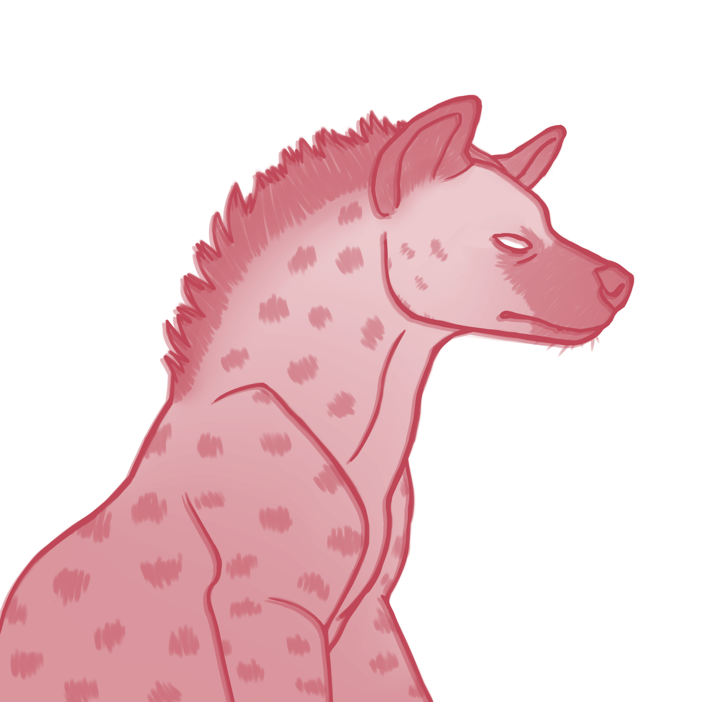
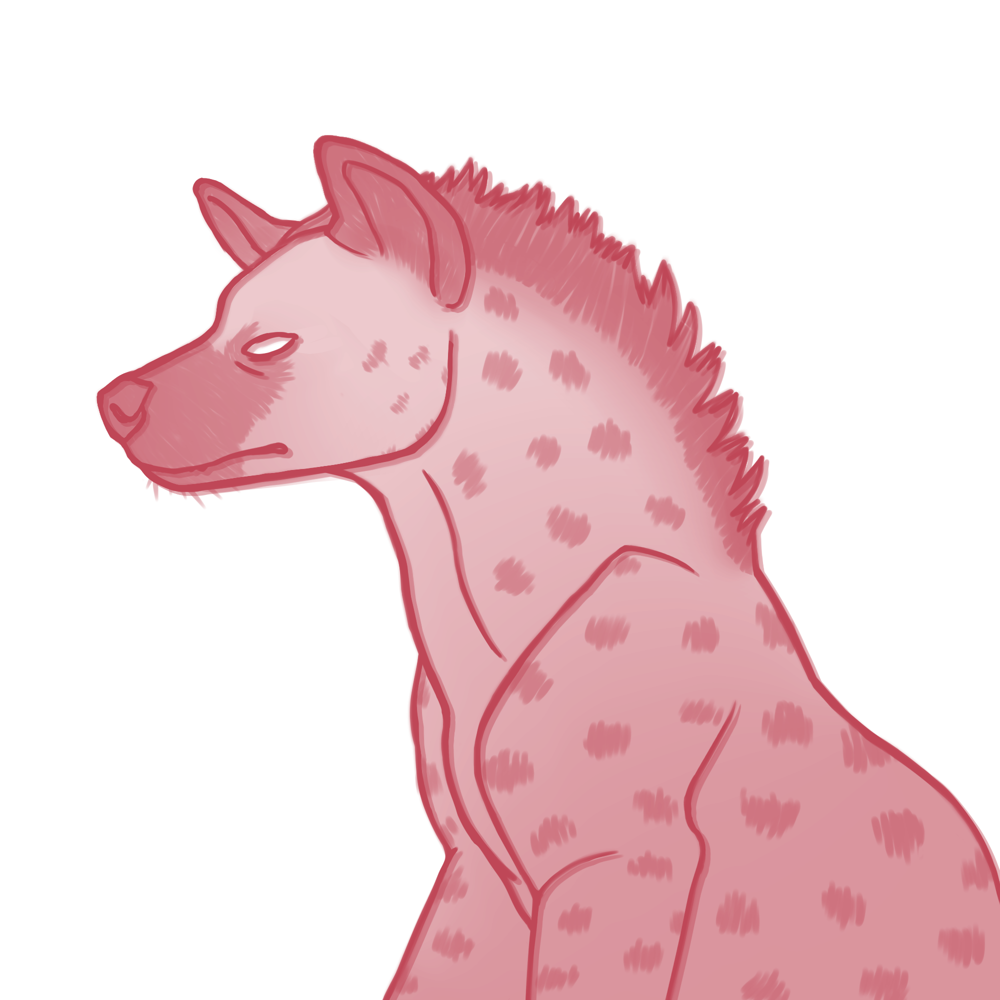

To keep a diary is like talking to oneself, and I already do enough of that.
What I want is to talk to the infinite.
Note: all pages of this website may contain uncensored illustrated gore.


Thanks for stopping by
- Vale
Things you can look at
Things you can read
index
0
text
?